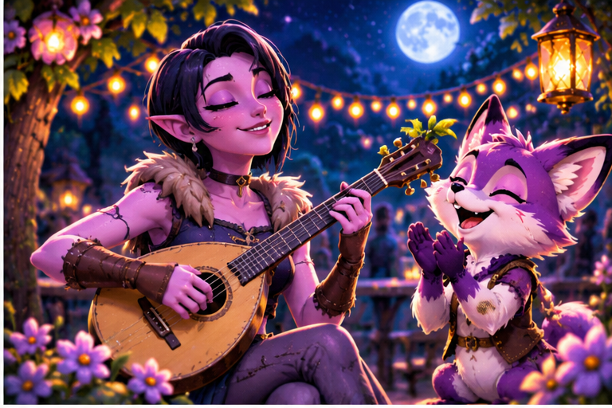
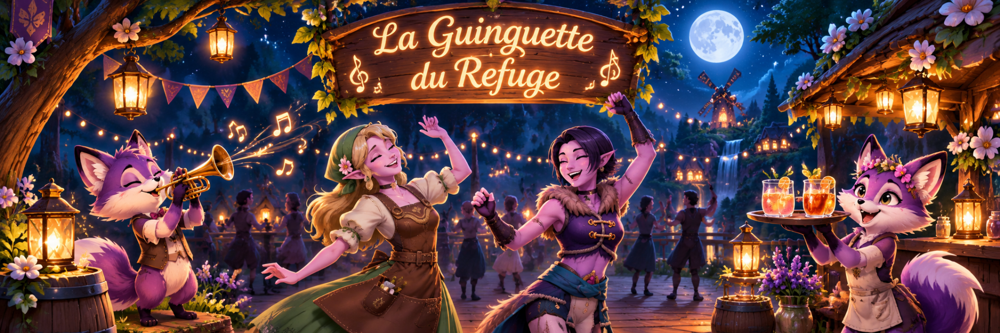
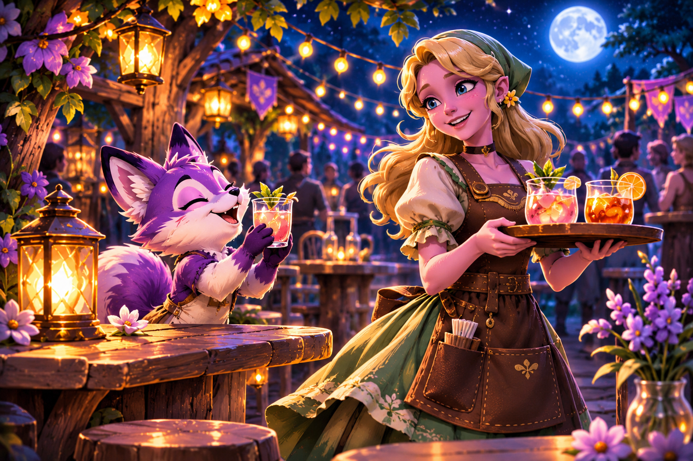

🎵 Participer
Découvre le blind test : écoute, choisis parmi quatre réponses et gagne des points.

Quand la nuit tombe sur le Refuge, les lanternes s'allument et la musique rassemble tout le monde. Choisis ton espace pour découvrir notre future soirée musicale.
Crée une véritable soirée musicale pour les membres du Refuge. La salle restera en préparation jusqu’à son ouverture aux inscriptions.
Prête à tester le jeu ?
Score : 0 point

À terme, cet espace présentera les trois premiers joueurs de chaque soirée, ainsi que les résultats des manches de départage.